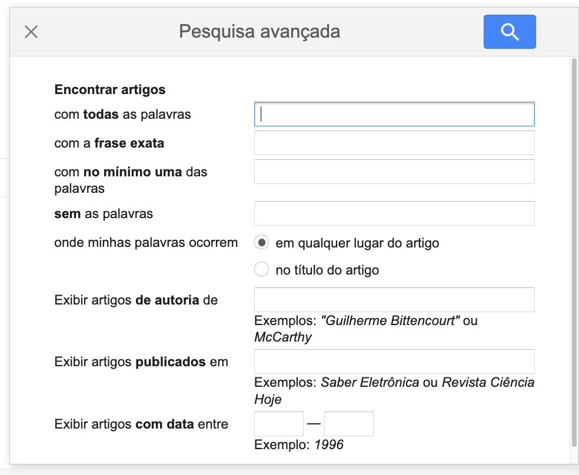
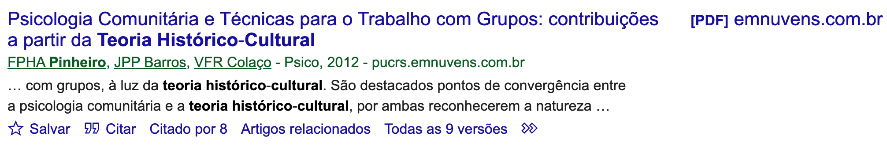
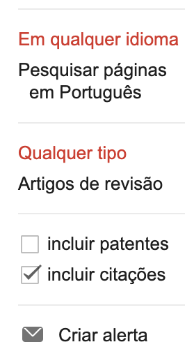
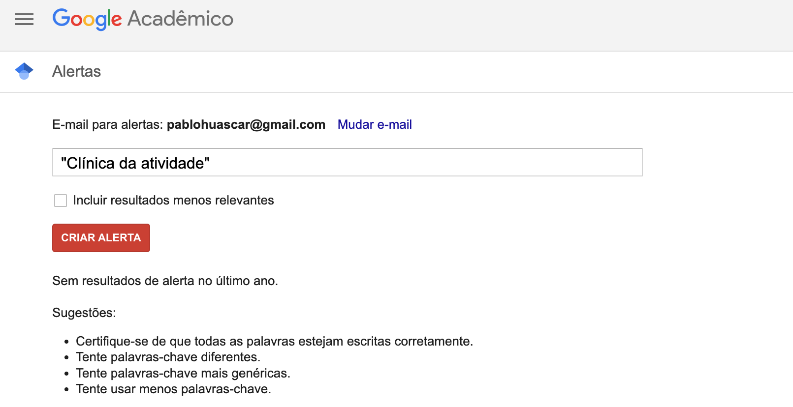
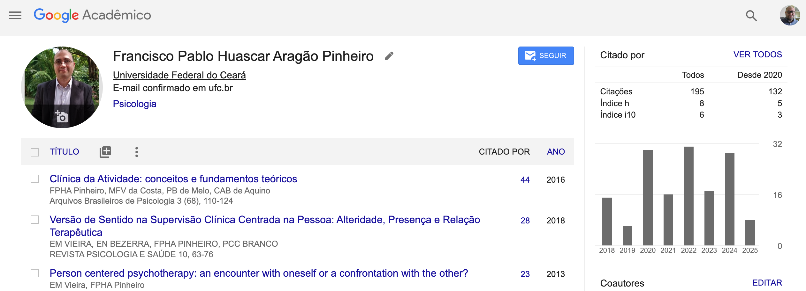

Pesquisa em Bases de Dados Acadêmicos para Psicologia
Google Acadêmico e Introdução a Outras Plataformas
Objetivos
- Entender a importância da pesquisa em bases de dados acadêmicos.
- Aprender o que é o Google Acadêmico, suas funcionalidades e como realizar buscas eficazes.
- Conhecer de forma geral as plataformas Web of Science e Scopus.
- Compreender como acessar artigos pagos através do Portal de Periódicos da CAPES via CAFe.
- Praticar a busca de artigos científicos.
Por que usar Bases de Dados Acadêmicas?
A Importância da Informação Científica
- Qualidade e Credibilidade: Artigos revisados por pares (peer-reviewed).
- Atualização: Acesso às pesquisas mais recentes.
- Profundidade: Cobertura especializada em diversas áreas do conhecimento.
- Fundamentação: Base para trabalhos acadêmicos, TCC, pesquisas, e prática profissional informada.
O Excesso de Informação na Internet Geral
- Dificuldade em encontrar fontes confiáveis.
- Informação superficial ou incorreta.
- Viés de confirmação e “bolhas” de informação.
O Portal de Periódicos da CAPES
O que é?
- Uma biblioteca virtual que reúne e disponibiliza o melhor da produção científica internacional e nacional.
- Oferece acesso a:
- Artigos de periódicos científicos (revistas).
- Livros e capítulos de livros.
- Teses e dissertações.
- Bancos de patentes.
- E muito mais!
- Conteúdo majoritariamente em inglês, mas com crescente produção em português e outros idiomas.
Acesso via CAFe (Comunidade Acadêmica Federada)
- O que é? Um serviço que permite o acesso remoto ao conteúdo assinado do Portal de Periódicos da CAPES utilizando o login e senha da sua instituição de ensino.
- Como funciona?
- Acesse: http://periodicos.capes.gov.br/
- Clique em “ACESSO CAFe”.
- Digie o nome da sua instituição e selecione na lista.
- Faça login com suas credenciais institucionais (as mesmas usadas em outros sistemas da sua universidade/instituto).
- No caso da UFC, seu CPF e senha do sigaa
- Pronto! Você estará navegando no Portal com acesso ao conteúdo assinado.
Por que isso é importante?
Muitos artigos que aparecem em bases de dados como Google Acadêmico, Web of Science e Scopus são pagos. O acesso via Portal de Periódicos CAPES permite que vocês leiam o texto completo de muitos desses artigos gratuitamente!
Google Acadêmico (Google Scholar)
O que é o Google Acadêmico?
- Ferramenta de busca gratuita do Google focada em literatura acadêmica.
- Ampla cobertura: artigos, teses, dissertações, livros, resumos, relatórios técnicos, e até mesmo pareceres de tribunais e patentes.
- Multidisciplinar: cobre diversas áreas do conhecimento.
- Indexa conteúdo de editoras acadêmicas, sociedades profissionais, repositórios institucionais, universidades e outros sites acadêmicos na web.
Para que serve?
- Encontrar trabalhos relevantes sobre um tema específico.
- Explorar trabalhos relacionados, citações, autores e publicações.
- Localizar o documento completo (seja gratuito na web ou via bibliotecas/Portal CAPES).
- Acompanhar novos desenvolvimentos em uma área de pesquisa.
- Verificar quem está citando suas publicações (para pesquisadores mais avançados).
Vantagens
- Gratuito e fácil de usar: Interface similar ao Google tradicional.
- Ampla cobertura: Inclui muitos tipos de documentos e fontes, inclusive literatura cinzenta.
- Rapidez na indexação: Novos trabalhos costumam aparecer rapidamente.
- Recursos úteis: “Citado por”, “Artigos relacionados”, alertas.
Desvantagens
- Controle de qualidade variável: Nem tudo que está indexado é revisado por pares ou de alta qualidade (é preciso avaliar criticamente os resultados!).
- Menos filtros avançados: Comparado a bases de dados por assinatura.
- Métricas de citação: Podem ser infladas por incluir citações de fontes não acadêmicas.
- Cobertura: Pode não ser tão completa para algumas áreas muito específicas ou para artigos mais antigos quanto bases de dados especializadas.
Como Realizar Buscas no Google Acadêmico
Busca Simples
- Digite palavras-chave, nomes de autores, ou títulos de artigos na caixa de busca.
- O Google Acadêmico tentará encontrar os termos em todo o texto do artigo, título, resumo, etc.
Dica Essencial: Use Palavras-Chave, Não Frases Completas!
- Menos é Mais: Diferente do Google comum, no Google Acadêmico, frases longas ou perguntas diretas (ex: “Quais são os efeitos da privação do sono na memória de curto prazo em estudantes universitários?”) geralmente produzem resultados menos precisos.
- Foco nos Conceitos: Identifique os conceitos centrais do seu tema de pesquisa e use-os como suas palavras-chave principais.
Dica Essencial: Exemplo em Psicologia
- Tema de Pesquisa: Efeitos da privação do sono na memória de curto prazo em estudantes universitários.
- Busca MENOS eficaz (frase longa): “Quais são os efeitos da privação do sono na memória de curto prazo em estudantes universitários?”
- Busca MAIS eficaz (palavras-chave): *
"privação do sono" "memória de curto prazo" universitários* Ou experimente variações/sinônimos:restrição sono memória trabalho estudantes(sem aspas para maior flexibilidade inicial, ou com aspas para termos compostos específicos). - Aproveite as Sugestões do Scholar:
- Ao começar a digitar suas palavras-chave na caixa de busca, o Google Acadêmico frequentemente sugere termos ou combinações relacionadas. Essas sugestões podem ser muito úteis para refinar sua busca ou descobrir termos alternativos usados na literatura.
Operadores de Busca (Refinando sua Pesquisa)
- Aspas
"": Para buscar uma frase exata.- Ex:
"teoria histórico-cultural"
- Ex:
OR(maiúsculo): Para buscar um termo OU outro (amplia a busca).- Ex:
ansiedade OR depressão
- Ex:
-(sinal de menos): Para excluir um termo (restringe a busca).- Ex:
psicologia social -ciampa
- Ex:
author:: Para buscar por autor específico.- Ex:
author:"L. S. Vygotsky"
- Ex:
intitle:: Para buscar termos que aparecem apenas no título do artigo.- Ex:
intitle:"trabalho docente"
- Ex:
- Combinação de operadores:
- Ex:
"symbolic mediation" OR "semiotic mediation" author:"Vygotsky" -"activity theory"
- Ex:
Interface de Busca Avançada
- No menu lateral (☰) do Google Acadêmico, clique em “Pesquisa avançada”.
- Permite construir buscas mais complexas usando campos específicos:
com todas as palavrascom a frase exata(equivale a aspas"")com pelo menos uma das palavras(equivale ao OR)sem as palavras(equivale ao -)onde minhas palavras ocorrem(em qualquer lugar do artigo / no título do artigo)Retornar artigos de autoria de(equivale aauthor:)Retornar artigos publicados em(nome da revista/evento)Retornar artigos datados entre(anos)
Interface de Busca Avançada
Recursos Úteis no Google Acadêmico
Filtros de Resultados (Barra Lateral Esquerda)
- Período: “Desde X ano”, “Período específico…”, “Classificar por data” (em vez de relevância).
- Incluir patentes / Incluir citações: Marque ou desmarque para refinar.
- “Citações” são referências a artigos que o Google Acadêmico não encontrou o texto completo online, mas que foram citados por outros.
- Tipo de artigo: “Qualquer tipo” ou “Artigos de revisão”.
Funcionalidades por Resultado
- Estrela (
Salvar): Adiciona o artigo à sua “Minha biblioteca” (precisa estar logado com uma conta Google). - Aspas (
Citar): Mostra formatos de citação pré-formatados (APA, ABNT NBR 6023, MLA, etc.).- ATENÇÃO: Sempre confira a formatação! Podem haver erros.
Citado por X: Mostra outros artigos que citaram este documento. Ótimo para ver o impacto e encontrar pesquisas mais recentes sobre o tema.Artigos relacionados: Encontra artigos similares em tema e referências.Todas as X versões: Mostra diferentes fontes onde o mesmo artigo pode estar disponível (ex: preprint, versão do autor, versão publicada).- Links de acesso:
[PDF],[HTML], ou links como “Texto Completo @ SuaInstituição” (se configurado).
Funcionalidades por Resultado
“Minha Biblioteca”
- Espaço pessoal para salvar e organizar artigos de interesse.
- Acesse clicando em “Minha biblioteca” no menu.
- Permite criar marcadores (etiquetas) para organizar os artigos salvos.
Alertas
- Crie alertas para receber e-mails quando novos artigos que correspondem aos seus critérios de busca forem publicados.
- Clique no ícone de envelope (“Criar alerta”) na página de resultados da busca ou no perfil de um autor.

Alertas
Perfis de Autor
- Pesquisadores podem criar perfis públicos para listar suas publicações e acompanhar suas métricas de citação (h-index, i10-index).
- Útil para encontrar todos os trabalhos de um autor específico e ver seu impacto.
Perfis de Autor
Google Acadêmico e Acesso ao Texto Completo (Portal CAPES)
Se não houver link direto…
- Anote os dados do artigo que você quer (Título, Autores, Ano, Revista).
- Acesse o Portal de Periódicos da CAPES (http://periodicos.capes.gov.br/).
- Faça login via CAFe com suas credenciais institucionais.
- Utilize a busca do Portal (por assunto, periódico, base de dados) para localizar o artigo.
Introdução a Outras Bases de Dados
Web of Science (WoS)
- O que é? Base de dados multidisciplinar por assinatura, mantida pela Clarivate Analytics.
- Foco: Principalmente em periódicos de alto impacto, com forte ênfase na análise de citações.
- Cobertura: Milhares de periódicos, anais de conferências, livros. Coleção principal inclui Science Citation Index Expanded, Social Sciences Citation Index, Arts & Humanities Citation Index.
- Recursos:
- Pesquisa por tópico, autor, afiliação.
- Ferramentas de refinamento de resultados.
- Análise de citações (quem citou, referências citadas).
- Métricas como Fator de Impacto de periódicos (Journal Citation Reports - JCR).
- Acesso: Via Portal de Periódicos da CAPES (após login CAFe, buscar pela base “Web of Science”).
Scopus
- O que é? Base de dados multidisciplinar de resumos e citações por assinatura, mantida pela Elsevier.
- Foco: Ampla cobertura de literatura revisada por pares (periódicos, livros, anais de conferências).
- Cobertura: Maior número de títulos indexados em comparação com a WoS, especialmente para publicações mais recentes e de áreas emergentes ou não anglófonas. Boa cobertura em Ciências Sociais.
- Recursos:
- Pesquisa por documento, autor, afiliação.
- Opções de busca avançada e filtros.
- Ferramentas de análise de pesquisa (tendências, impacto de autores/instituições).
- Métricas como CiteScore, SJR, SNIP para periódicos.
- Acesso: Via Portal de Periódicos da CAPES (após login CAFe, buscar pela base “Scopus”).
PsycArticles (APA): Textos Completos e Ligação com PsycINFO
- Ponto de Partida no Portal CAPES: - O acesso a esses recursos da APA geralmente se inicia buscando por “PsycArticles (APA)” no Portal de Periódicos.
- O que é PsycArticles (APA)?
- Uma base de dados que fornece TEXTO COMPLETO de periódicos.
- Inclui aproximadamente 70 títulos chave.
- Publicadores: American Psychological Association (APA), Canadian Psychological Association e Hogrefe Publishing Group.
- Disponibilidade dos textos completos: varia, com alguns títulos disponíveis desde 1894.
- A Conexão Essencial:
- Este acesso via PsycArticles OFERECE O RECURSO PsycINFO.
- PsycINFO é a ampla base de dados referencial que detalharemos no próximo slide.
- O que é PsycArticles (APA)?
PsycINFO: A Base Referencial Detalhada da APA
- O que é PsycINFO?
- Uma BASE REFERENCIAL (contém referências e resumos) muito abrangente.
- Cobre aproximadamente 2.450 periódicos, além de livros, capítulos de livros e dissertações.
- Mantida pela American Psychological Association (APA).
- Foco Principal: É a base de dados especializada líder em Psicologia e áreas correlatas (ciências comportamentais e sociais).
- Cobertura Temporal Ampla: Registros desde 1806 até o presente.
- Recurso Chave do PsycINFO:
- Indexação detalhada com o “Thesaurus of Psychological Index Terms®”: um vocabulário controlado que permite buscas temáticas de alta precisão.
- Plataforma, Acesso via CAPES e Recomendação:
- Ambos os recursos são acessados através da plataforma PsycNET.
- Recomendação: Para pesquisas aprofundadas em Psicologia, use PsycINFO para encontrar uma vasta gama de literatura relevante com busca precisa, e acesse os textos completos disponíveis diretamente via PsycArticles.
Google Acadêmico vs. WoS/Scopus/PsycINFO
| Característica | Google Acadêmico | WoS / Scopus | PsycINFO |
|---|---|---|---|
| Custo | Gratuito | Assinatura (via CAPES) | Assinatura (via CAPES) |
| Cobertura | Muito Ampla, multidisciplinar | Ampla, multidisciplinar, curada | Especializada em Psicologia, curada |
| Tipos de Doc. | Artigos, teses, livros, preprints | Principalmente artigos, livros, anais | Artigos, livros, dissertações |
| Controle Qualidade | Variável | Alto (revisão por pares, seleção) | Alto (foco APA) |
| Busca | Simples, alguns operadores | Avançada, muitos filtros, operadores | Avançada, Tesauro especializado |
| Análise Citação | Básica (“Citado por”) | Avançada (métricas, relatórios) | Focada em relevância para a área |
| Ideal para | Busca rápida, multidisciplinar inicial | Pesquisa aprofundada, análise impacto | Pesquisa aprofundada em Psicologia |
Exercícios Práticos (Google Acadêmico)
Instruções
- Abra o Google Acadêmico (scholar.google.com).
- Para cada exercício, tente aplicar diferentes operadores e filtros.
- Observe os resultados: número de artigos, relevância, tipos de documentos.
- Clique em “Citar” para ver os formatos.
- Explore “Citado por” e “Artigos relacionados”.
- Verifique (simuladamente) como você buscaria o texto completo via Portal CAPES.
Exercício 1: Terapia Cognitivo-Comportamental e Ansiedade em Adolescentes
- Termos sugeridos: “terapia cognitivo-comportamental”, “ansiedade”, “adolescentes”
- Desafio: Encontre artigos de revisão publicados nos últimos 5 anos.
- Extra: Procure por um autor específico que publicou sobre o tema (ex: Judith Beck, se aplicável, ou outro que conheçam).
Exercício 2: Impacto das Redes Sociais na Autoestima de Jovens
- Termos sugeridos: “redes sociais” OR “mídias sociais”, “autoestima” OR “bem-estar psicológico”, “jovens” OR “universitários”
- Desafio: Encontre artigos que não mencionem “Instagram” especificamente, mas foquem em redes sociais de modo geral.
- Extra: Salve um artigo relevante na sua “Minha Biblioteca” (se logado).
Exercício 3: Mindfulness e Redução do Estresse em Profissionais da Saúde
- Termos sugeridos:
intitle:mindfulness, “redução do estresse”, (“profissionais da saúde” OR enfermeiros OR médicos) - Desafio: Classifique os resultados por data para ver os mais recentes.
- Extra: Crie um alerta para este tema.
Exercício 4: Tema Livre da Psicologia de seu interesse
- Escolha um tema de seu interesse dentro da Psicologia.
- Formule uma estratégia de busca usando pelo menos dois operadores diferentes.
- Aplique um filtro de data.
- Identifique um artigo que pareça promissor e explique porquê.
Dicas Finais e Próximos Passos
Dicas para Pesquisas Eficazes
- Seja específico: Quanto mais claras suas palavras-chave, melhores os resultados.
- Use sinônimos e termos relacionados: Combine com
OR. - Comece amplo, depois refine: Use filtros e operadores progressivamente.
- Analise criticamente os resultados: Verifique a fonte, autores, data, metodologia (ao ler o artigo).
- Mantenha um registro: Anote as bases de dados usadas, termos de busca, e artigos importantes. Gerenciadores de referência (Mendeley, Zotero) podem ajudar!
- Peça ajuda: Seus professores e os bibliotecários da sua instituição são ótimos recursos.
Próximos Passos
- Explore o Portal de Periódicos da CAPES e familiarize-se com o acesso CAFe.
- Pratique as buscas no Google Acadêmico.
- Quando necessário para trabalhos mais avançados, explore a Web of Science, Scopus ou PsycINFO através do Portal CAPES.